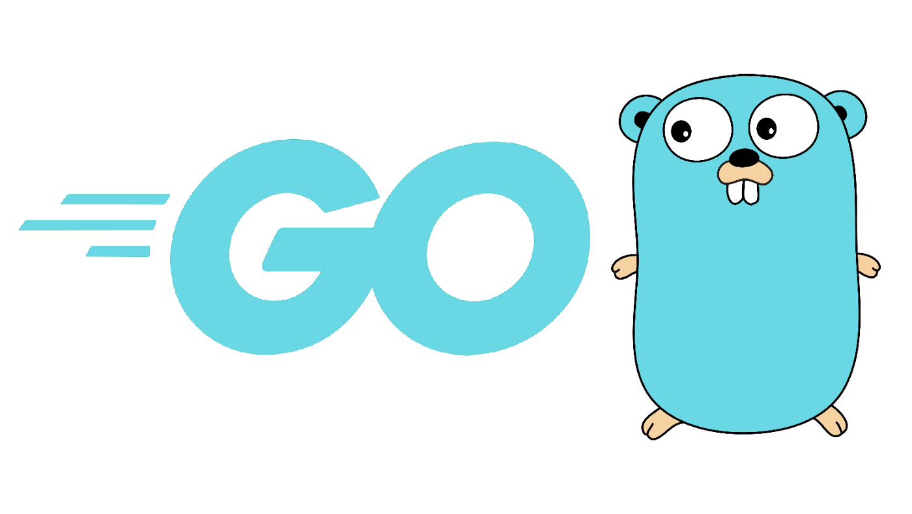

簡介

歡迎閱讀《深入Go語言之旅》。本書從Go語言源碼出發，分析Goroutine調度流程，通道、上下文等的源碼，以及defer，panic等語言特性，希望能夠幫助閱讀此書的人更好的理解Go語言的設計與實現機制。 本書分析的源碼基於 go1.14.13 版本，運行在ubuntu16 64位系統下，如無特殊說明，本書所有展示分析的源碼，以及示例執行結果都是基於此環境。
歡迎掃描下面二維碼進微信羣，探討交流Go語言知識。申請加入時候請備註：深入Go語言之旅。羣主會拉你進羣。在閱讀中有什麼問題不懂，或者可以指正的都可以通過上面微信碼聯繫作者，或者發郵件(qietingfy#gmail.com)交流溝通。
感謝打賞
如果覺得作者寫的不錯，對您有些幫助，歡迎贊助作者一杯咖啡☕️，金額隨意。 微信打賞碼 | 支付寶收款碼 | --- | --- |
十分感謝以下讀者的打賞❤️
| 姓名 | 金額 | 留言 |
|---|---|---|
| 鐵頭班*友 | 10 | |
| *w | 50 | 寫的很好，加油 |
| *油 | 33 | |
| *譚 | 10 | |
| 林*壕 | 20 | |
| 張*衝 | 20 | |
| 強* | 6.6 | |
| w*g | 20 | excellent work |
| 田*偉 | 10 | 寫的很好，加油 |